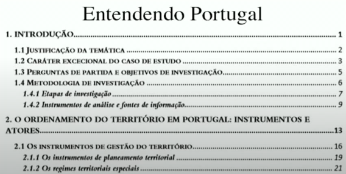

Entendendo Portugal
Introduçao
Justificaçao da temàtica
Caracter excecional do caso de estudo
Perguntas de partida e objetivos de investigaçao
Metodologia de investigaçao
Etapas de investigaçao
Instrumentos de analise e fontes de informaçao
O ordenamento do territorio em portugal: Instrumentos e atores
Os instrumentos de gestao do territorio
Os instrumentos de planeamento territorial
Os regimes territoriais especiais
